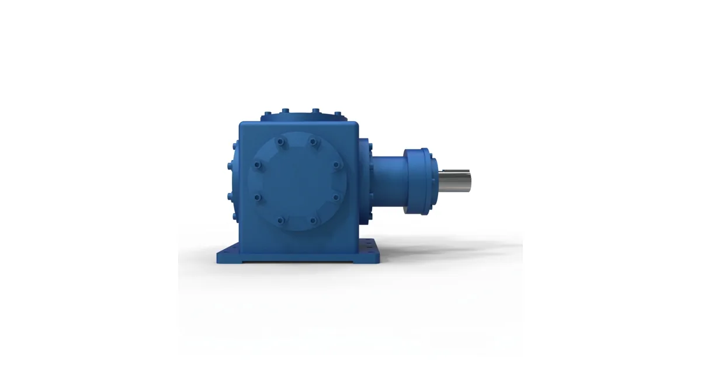
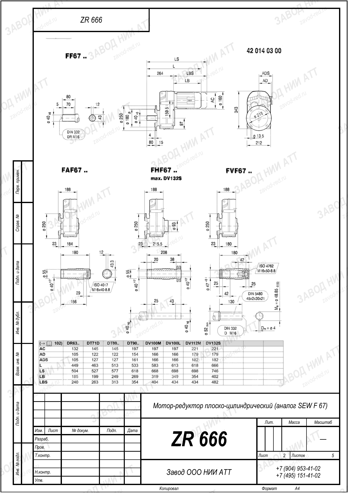

Собственное производствоПромышленные редукторы для производителей оборудования•Отгрузка по всей России•Аналоги SEW, NORD, Bonfiglioli без переделки рамы•Расчёт и КП за 15 минут•Гарантия 36 месяцевПромышленные редукторы для производителей оборудования•Отгрузка по всей России•Аналоги SEW, NORD, Bonfiglioli без переделки рамы•Расчёт и КП за 15 минут•Гарантия 36 месяцев
Опыт инженеров Завода Редукторов · время чтения ~7 минут
Сахарный завод работает сезонно и напряжённо: транспортёры и мойки свёклы, диффузионные аппараты, мешалки утфеля, центрифуги. Среда — влажная, абразивная от земли и песка, местами горячая. Редуктор для сахарного завода выбирают под большой момент, влагозащиту и непрерывный режим кампании. Разберём приводы и замену импорта аналогом ZR.
Приводы сахарного производства
Технология от свёклы до сахара насыщена тихоходными приводами большого момента:
Центрифуги — отделение кристаллов, высокие обороты и динамика.
Среда: влага, абразив, тепло
Кампания идёт непрерывно, среда тяжёлая:
влага и брызги сока требуют защиты IP65 и антикоррозионного корпуса;
на мойке и транспортёрах свёклы — абразив (земля, песок), усиленные уплотнения;
на утфеле и кристаллизаторах — повышенная температура, синтетическое масло;
непрерывный сезонный режим S1 — запас по ресурсу подшипников и зубьев.
Привод диффузионного аппарата — один из самых тяжёлых на заводе: огромный момент на очень малых оборотах. Здесь применяют многоступенчатые цилиндрические или планетарные редукторы и обязательно делают тепловой расчёт узла.

Типовое исполнение коническо-цилиндрического привода
Учитывайте и сезонность обслуживания: между кампаниями оборудование консервируют, а перед запуском расконсервируют и проверяют. Масло меняют по наработке и по состоянию, подшипники дефектуют, уплотнения при износе — обновляют. Такой подход исключает отказ в разгар кампании, когда остановка одного узла тормозит всю технологическую линию.
Как подобрать редуктор для сахзавода
Определите передел и режим: мойка свёклы (удары, абразив), диффузия (огромный момент, малые обороты), утфель (тепло, вязкость). От этого зависят тип передачи, сервис-фактор и класс масла. Снимите с шильдика M₂, n₂, i и мощность, зафиксируйте монтаж и тип вала. Тяжёлые тихоходные узлы обязательно проверяйте тепловым расчётом.
Планируйте замену на межсезонье: кампания идёт непрерывно, и внеплановый простой дорог. Для мойки и транспортёров свёклы закладывайте повышенный сервис-фактор на удары и абразив, для диффузии — запас момента и ресурса. При замене импортного привода сохраняйте присоединительные размеры, чтобы аналог встал на штатный фундамент.
Сведём ключевые параметры подбора в короткий чек-лист — по нему удобно сверяться перед запросом или расчётом:
Передел
мойка/диффузия/утфель
Тяжёлые узлы
тепловой расчёт, запас ресурса
Сервис-фактор
повышенный на мойке свёклы
Момент
M₂, n₂, i с шильдика
Складской запас типовых исполнений
Типовые ошибки при подборе для сахзавода
На сахарном производстве повторяются такие промахи:
меняют критичный привод в кампанию, а не в межсезонье — простой всей линии;
берут привод мойки свёклы без запаса на удары и абразив;
не делают тепловой расчёт тихоходной диффузии большого момента;
ставят минеральное масло на горячих мешалках утфеля.

Габаритный и присоединительный чертёж SEW F67, лист 2 · аналог ZR 666 — все чертежи SEW
Замена импортных приводов
На сахзаводах распространены SEW, Flender, NORD, Rossi. Мы (Завод Редукторов, Челябинск) делаем аналоги ZR по габаритным и присоединительным размерам, поэтому привод транспортёра, диффузии или мешалки меняется в межсезонье без переделки узла. По шильдику калькулятор подбора находит эквивалент. О замене импорта — на странице импортозамещения, отраслевые решения — в разделе отраслей.
Вопросы и ответы
Частые вопросы
Какой редуктор ставят на диффузионный аппарат?
Диффузия — очень тихоходный узел огромного момента. Применяют многоступенчатые цилиндрические или планетарные редукторы большого момента с запасом ресурса и обязательным тепловым расчётом, так как узел работает непрерывно всю кампанию.
Как защитить привод на мойке свёклы?
Мойка и транспортёры свёклы несут землю, песок и камни — абразив и ударную нагрузку. Берут коническо-цилиндрические редукторы с защитой IP65, усиленными уплотнениями и повышенным сервис-фактором SF 1,5–2,0 на удары.
Почему для сахзавода важен запас ресурса?
Сахарная кампания идёт непрерывно несколько месяцев в режиме S1. Простой из-за отказа привода стоит дорого. Поэтому закладывают запас по ресурсу подшипников и зубьев и планово меняют масло по наработке в межсезонье.
Какое масло применять на мешалках утфеля?
Утфель — вязкий горячий продукт, корпус редуктора нагревается. Применяют синтетическое масло на ПАО-основе VG 220–320, стабильное при повышенной температуре, с увеличенным интервалом замены между кампаниями.
Можно ли заменить импортный привод диффузии российским?
Да. Мы делаем аналоги ZR по габаритным и присоединительным размерам массовых типоразмеров SEW, Flender, NORD. По моменту, передаточному числу и монтажу подбирается эквивалент, встающий на штатное место без переделки фундамента.
Когда лучше менять редукторы на сахарном заводе?
Оптимально — в межсезонье между кампаниями, когда оборудование остановлено на ремонт. Тогда есть время на подбор габаритного аналога, монтаж и обкатку. В кампанию меняют только аварийно, поэтому критичные приводы держат в резерве заранее.
Редуктор для сахарного завода выбирают под транспортёры и мойки свёклы (SF повышенный), тихоходную диффузию большого момента и мешалки утфеля, с защитой IP65 и синтетическим маслом у горячих узлов. Аналоги ZR заменяют SEW, Flender и NORD.
Подробнее: характеристики и полезные ссылки
Сахарное производство — тихоходные приводы большого момента в влажной абразивной среде, работающие непрерывно всю кампанию. Ключевые критерии — запас момента и ресурса, влаго- и абразивозащита, тепловой расчёт тяжёлых узлов.
Параметр
Рекомендация для сахзавода
Защита
IP65, антикоррозионный корпус
Диффузия
многоступенчатый, тепловой расчёт
Масло
ПАО VG 220–320 у горячих узлов
Подобрать привод поможет калькулятор. Замена импорта — на странице импортозамещения, решения по отраслям — в разделе отрасли, ассортимент — в каталоге. Мы (Завод Редукторов, Челябинск) выдаём паспорт и гарантию 36 месяцев, а критичные приводы диффузии и мойки свёклы помогаем зарезервировать заранее, чтобы замена в межсезонье прошла без остановки линии в разгар кампании.
Как заказать редуктор по образцу?
Пришлите фото или чертёж старого редуктора — изготовим аналог с теми же присоединительными. Переходной фланец или спецвал — спроектируем под вашу геометрию.
Какие документы получите с редуктором?
Паспорт изделия с характеристиками, декларация ЕАС, сертификат ГОСТ 31592-2012. Гарантия 36 месяцев — при поломке меняем по договору.
Подберём привод для вашего сахзавода
Опишите механизм и параметры редуктора — подберём аналог ZR под непрерывную кампанию с КП за 15 минут.
Рекомендуете наши редукторы коллегам, заказчику или своему отделу снабжения? За каждый состоявшийся заказ по вашей рекомендации выплачиваем 5% от суммы — реферальное вознаграждение переводом на карту. Прозрачный договор, работа со снабженцами и проектными отделами напрямую, отгрузка от производителя (ООО «НИИ АТТ», Челябинск).